پرسشنامهها در سایت پرسلاین ساخته شد و به طور آنلاین بر اساس جمعیت نمونه در اختیار مشارکتکنندگان قرار گرفت. با اضافه شدن هر پاسخ، از طریق API پرسلاین فایل دادهها به صورت روزانه دانلود میشود و بر اساس آن جدولها و نمودارهای آماری تولید میگردند.
Code
# imports and functionsimport jsonimport requestsimport arabic_reshaperfrom bidi.algorithm import get_displayfrom matplotlib import font_manager, rcimport numpy as npimport matplotlib.pyplot as pltimport pandas as pdimport matplotlib.cm as cmimport matplotlib.colors as mcolorsfrom matplotlib.lines import Line2Dfrom collections import Counter, defaultdictCOLORS = {"danger": "#e74c3c","warning": "#f39c12","primary": "#375a7f","info": "#3498db","success": "#00bc8c","secondary": "#444","light": "#adb5bd","dark": "#303030"}SURVEY_ID ="1617468"BASE_SURVEY_URL ="https://survey.porsline.ir"withopen("psk.txt",'r') as fh: api_key = fh.readline().strip()api_key_text =f"API-Key {api_key}"headers = {'Authorization': api_key_text,'Content-Type': 'application/json'}url = BASE_SURVEY_URL +f"/api/v2/surveys/{SURVEY_ID}/responses/results-table"response = requests.request("GET", url, headers=headers)n_responders =int(response.json()["responders_count"])# تابع تبدیل متن فارسیdef prepare_persian_text(text): reshaped_text = arabic_reshaper.reshape(text)return get_display(reshaped_text)# تنظیم فونت فارسیfont_path ="fonts/xb-zar/Zar/XB Zar.ttf"# مسیر فونت # مسیر فونت فارسیprop = font_manager.FontProperties(fname=font_path)rc('font', family=prop.get_name())# Load the excel filedf = pd.read_excel('Phase02.xlsx')# Pre-Proccessing# ======================================================================================================## Size unificationordered_company_sizes = ['کمتر از ۵۰ نفر','۵۱ تا ۲۰۰ نفر', # Combined category'۲۰۰ تا ۵۰۰ نفر','بیش از ۵۰۰ نفر']ordered_ages = ['کمتر از ۲۵ سال','۲۶ تا ۳۵ سال','۳۶ تا ۴۵ سال','بالای ۴۵ سال']# Create a mapping from the original size values to the desired ordersize_mapping = { size: '۵۱ تا ۲۰۰ نفر'for size in df['اندازه شرکت:'].unique()if'۵۱ تا ۱۰۰ نفر'in size or'۱۰۱ تا ۲۰۰ نفر'in size}size_mapping.update({ size: sizefor size in df['اندازه شرکت:'].unique()if'کمتر از ۵۰ نفر'in size or'۲۰۰ تا ۵۰۰ نفر'in size or'بیش از ۵۰۰ نفر'in size})df['اندازه شرکت:'] = df['اندازه شرکت:'].map(size_mapping)df.insert(17, 'score_section_2', None)df.insert(24, 'score_section_3', None)df.insert(31, 'score_section_4', None)df.insert(36, 'score_section_5', None)df.insert(43, 'score_section_6', None)df.insert(48, 'score_section_7', None)df.insert(54, 'score_section_8', None)QUESTIONS = df.columns.tolist()section2_answer_order = ['به هیچ وجه','کم','متوسط','زیاد','خیلی زیاد']section3_answer_order = ['خیلی مخالفم','مخالفم','تا حدودی','موافقم',"خیلی موافقم"]section6_answer_order = ['به هیچ وجه','کم','تا حدودی','زیاد','خیلی زیاد']# Assiging Questions to each sectionssection_2_questions = [QUESTIONS[11], QUESTIONS[12],QUESTIONS[13],QUESTIONS[14],QUESTIONS[15],QUESTIONS[16]]section_3_questions = [QUESTIONS[18], QUESTIONS[19], QUESTIONS[20], QUESTIONS[21], QUESTIONS[22], QUESTIONS[23]]section_4_questions = [QUESTIONS[25], QUESTIONS[26], QUESTIONS[27], QUESTIONS[28], QUESTIONS[29], QUESTIONS[30]]section_5_questions = [QUESTIONS[32], QUESTIONS[33], QUESTIONS[34], QUESTIONS[35]]section_6_questions = [QUESTIONS[37], QUESTIONS[38], QUESTIONS[39], QUESTIONS[40], QUESTIONS[41], QUESTIONS[42]]section_7_questions = [QUESTIONS[44], QUESTIONS[45], QUESTIONS[46], QUESTIONS[47]]section_8_questions = [QUESTIONS[49], QUESTIONS[50], QUESTIONS[51], QUESTIONS[52], QUESTIONS[53]]section_9_questions = [QUESTIONS[55], QUESTIONS[56], QUESTIONS[57], QUESTIONS[58], QUESTIONS[59], QUESTIONS[60], QUESTIONS[61]]def compute_section_score(df, question_cols, score_col, answer_order): score_map = {text: i +1for i, text inenumerate(answer_order)}# Map answers to scores column by column numeric_answers = df[question_cols].apply(lambda col: col.map(score_map))# Compute the row-wise average (skip NaNs) df[score_col] = numeric_answers.mean(axis=1) df[score_col] = df[score_col].round(3)return df# Computing scores for each sectiondf = compute_section_score(df, section_2_questions, 'score_section_2' , section2_answer_order)df = compute_section_score(df, section_3_questions, 'score_section_3' , section3_answer_order)df = compute_section_score(df, section_4_questions, 'score_section_4' , section3_answer_order)df = compute_section_score(df, section_5_questions, 'score_section_5' , section3_answer_order)df = compute_section_score(df, section_6_questions, 'score_section_6' , section6_answer_order)df = compute_section_score(df, section_7_questions, 'score_section_7' , section6_answer_order)df = compute_section_score(df, section_8_questions, 'score_section_8' , section6_answer_order)# University mappingdef load_university_map(filepath="universities.json"):withopen(filepath, "r", encoding="utf-8") as f:return json.load(f)def classify_universities(df, column, uni_map, inplace=True): cleaned_series = df[column].str.strip() mapped = cleaned_series.map(uni_map).fillna("نامشخص")if inplace: df[column] = mappedelse:return mappeduni_map = load_university_map()classify_universities(df, QUESTIONS[5], uni_map)# =======================================================================================================def plot_builder(df, column_name, ordered_list=None, colors=None, title=None, xlabel=None, ylabel=None):""" Generates a bar chart from a DataFrame column with optional ordering, coloring, and hatching, with automatic width adjustment. """# Check if the column existsif column_name notin df.columns:print(f"Error: The column '{column_name}' does not exist in the DataFrame.")returnif ordered_list: value_mapping = { value: ordered_valuefor ordered_value in ordered_listfor value in df[column_name].unique()if ordered_value == value } categorical_value = pd.Categorical(df[column_name].map(value_mapping), categories=ordered_list, ordered=True) df_sorted = df.assign(sorted_value=categorical_value).sort_values('sorted_value') unique_values_sorted = df_sorted['sorted_value'].unique() counts_sorted = df_sorted['sorted_value'].value_counts().reindex(ordered_list).fillna(0) x_labels = [prepare_persian_text(val) for val in counts_sorted.index]else: counts_sorted = df[column_name].value_counts() x_labels = [prepare_persian_text(val) for val in counts_sorted.index] unique_values_sorted = counts_sorted.index# Determine colors and hatching hatch_patterns = ['/', '.', 'o', None]if colors: bar_colors = [colors.get(val, COLORS['dark']) for val in unique_values_sorted] bar_hatches = [None] *len(unique_values_sorted)else: default_color_list = [COLORS['primary'], COLORS['success'], COLORS['warning'], COLORS['danger'], COLORS['info']] bar_colors = [default_color_list[i %len(default_color_list)] for i inrange(len(unique_values_sorted))]iflen(unique_values_sorted) >len(default_color_list): bar_hatches = [hatch_patterns[i %len(hatch_patterns)] for i inrange(len(unique_values_sorted))]else: bar_hatches = [None] *len(unique_values_sorted)# Calculate figure width num_bars =len(counts_sorted) bar_width =0.8 spacing =0.2 estimated_plot_width = num_bars * (bar_width + spacing) min_width =8 fig_width =max(min_width, estimated_plot_width) fig, ax = plt.subplots(figsize=(fig_width, 6))# Set dark background fig.patch.set_facecolor('#303030') ax.set_facecolor('#303030')# Plot barsfor i, (val, count) inenumerate(counts_sorted.items()): ax.bar(val, count, color=bar_colors[i], hatch=bar_hatches[i], edgecolor='#adb5bd', linewidth=1.5)# Title and labelsif title: ax.set_title(prepare_persian_text(title), color='white')if xlabel: ax.set_xlabel(prepare_persian_text(xlabel), color='white')if ylabel: ax.set_ylabel(prepare_persian_text(ylabel), color='white')# Counts above bars max_count =max(counts_sorted.values) ax.set_ylim(0, max_count *1.1)for i, count inenumerate(counts_sorted.values): per =round((count /sum(counts_sorted)) *100, 2) ax.text(counts_sorted.index[i], count + max_count *0.02,f"{int(count)}, ({per}%)", ha='center', va='bottom', color='white')# X-axis labels and ticks ang =0if num_bars ==2else45 ax.set_xticks(range(len(counts_sorted.index))) ax.set_xticklabels(x_labels, rotation=ang, ha='right', color='white') ax.tick_params(axis='x', colors='white') ax.tick_params(axis='y', colors='white')# Axis lines (spines)for spine in ax.spines.values(): spine.set_edgecolor('#adb5bd') plt.tight_layout() plt.show()def plot_stacked_bar_chart_from_counts( counts_dict, title="Stacked Bar Chart", xlabel="Category", ylabel="Count", colors=None, max_labels=10):""" Generates stacked bar charts from a counts dictionary. Applies prepare_persian_text and uses custom colors with dark theme. """ farsi_priority = ["اولویت اول", "اولویت دوم", "اولویت سوم", "اولویت چهارم","اولویت پنجم", "اولویت ششم", "اولویت هفتم", "اولویت هشتم" ] farsi_labels = [prepare_persian_text(label) for label in farsi_priority]# Prepare data x_labels =list(counts_dict.keys())# Filter long x-labelsiflen(x_labels) > max_labels: filtered_keys = x_labels[:max_labels] counts_dict_filtered = {k: counts_dict[k] for k in filtered_keys} counts_dict_filtered[prepare_persian_text('سایر')] = {}for k in x_labels[max_labels:]:for item, count in counts_dict[k].items():if pd.notna(item): counts_dict_filtered[prepare_persian_text('سایر')][item] =\ counts_dict_filtered[prepare_persian_text('سایر')].get(item, 0) + count counts_dict = counts_dict_filtered x_labels =list(counts_dict.keys())else: x_labels = [prepare_persian_text(label) for label in x_labels] all_elements =set()for counts in counts_dict.values():for element in counts.keys():if pd.notna(element): all_elements.add(element) elements =sorted(all_elements)if colors isNone: default_color_list = [ COLORS['primary'], COLORS['success'], COLORS['warning'], COLORS['danger'], COLORS.get('purple', 'purple'), COLORS.get('violet', 'violet'), COLORS['info'], COLORS.get('olive', 'olive') ] colors = { elements[i %len(elements)]: default_color_list[i %len(default_color_list)]for i inrange(len(elements)) }# Plot setup fig, ax = plt.subplots(figsize=(10, 6)) fig.patch.set_facecolor('#303030') ax.set_facecolor('#303030') bar_positions = np.arange(len(x_labels)) bottom = np.zeros(len(x_labels))for j, element inenumerate(elements): heights = [counts_dict.get(label, {}).get(element, 0) for label in x_labels] bars = ax.bar( bar_positions, heights, bottom=bottom, label=prepare_persian_text(element), color=colors.get(element, 'gray'), edgecolor='#adb5bd', linewidth=1.5 )# Add text on barsfor i, bar inenumerate(bars): height = bar.get_height()if height >0: ax.text( bar.get_x() + bar.get_width() /2, bar.get_y() + height /2,f'{int(height)}', ha='center', va='center', color='white', fontsize=10 ) bottom += np.array(heights)# Axes and labels ax.set_xticks(bar_positions) ax.set_xticklabels(farsi_labels[:len(bar_positions)], rotation=45, ha='right', fontsize=10, color='white') ax.set_xlabel(prepare_persian_text(xlabel), fontsize=12, color='white', labelpad=10) ax.set_ylabel(prepare_persian_text(ylabel), fontsize=12, color='white', labelpad=10) ax.set_title(prepare_persian_text(title), fontsize=14, color='white', pad=15)# Grid and spines ax.grid(axis='y', linestyle='--', alpha=0.5, color='#adb5bd')for spine in ax.spines.values(): spine.set_edgecolor('#adb5bd') ax.tick_params(colors='white')# Legend ax.legend( title=prepare_persian_text("دستهها"), title_fontsize=11, fontsize=10, labelcolor='white', facecolor='#303030', edgecolor='#adb5bd', loc='upper left', bbox_to_anchor=(1.02, 1) ) plt.tight_layout() plt.show()def column_elemnt_counter (df, hdr): column_name= hdr separator ="،" new_data = [] max_items =0for _, row in df.iterrows(): items =str(row[column_name]).split(separator) items = [item.strip() for item in items] new_data.append(items) max_items =max(max_items, len(items)) new_df = pd.DataFrame(new_data) new_df.columns = [f'priority{str(i +1).zfill(2)}'for i inrange(max_items)] # Create column name column_element_counts = {}for col in new_df.columns:try: new_df[col] = new_df[col].replace('nan', None)# Use value_counts() with dropna=False to include NaN counts counts = new_df[col].value_counts(dropna=True)# Convert to dictionary, handling potential type issues in keys column_element_counts[col] = {str(k): int(v) for k, v in counts.items()} exceptTypeErroras e:print(f"TypeError encountered in column '{col}': {e}")# Handle the error appropriately, e.g., skip the column or use a default column_element_counts[col] = {} # Or some other defaultexceptExceptionas e:print(f"An unexpected error occurred in column '{col}': {e}") column_element_counts[col] = {} # Or some other defaultreturn column_element_countsdef plot_responses_by_category( df, category_col, question_col, ordered_list=None, category_sort=None, COLORS=COLORS, title=None, xlabel=None, ylabel=None, percent=False,):# Group counts count_df = df.groupby([category_col, question_col]).size().unstack(fill_value=0)# Reorder columns if ordered_list is providedif ordered_list: count_df = count_df[[col for col in ordered_list if col in count_df.columns]]# Reorder index (categories) if category_sort is providedif category_sort: count_df = count_df.reindex([cat for cat in category_sort if cat in count_df.index])# Convert to percent if neededif percent: count_df = count_df.div(count_df.sum(axis=1), axis=0) *100# Prepare texts count_df.index = [prepare_persian_text(str(idx)) for idx in count_df.index] count_df.columns = [prepare_persian_text(str(col)) for col in count_df.columns]# Plot sizing num_categories = count_df.shape[0] bar_width =0.8 spacing =0.3 estimated_width = num_categories * (bar_width + spacing) fig_width =max(8, estimated_width)# Create figure and set background fig, ax = plt.subplots(figsize=(fig_width, 6)) fig.patch.set_facecolor('#303030') ax.set_facecolor('#303030')# Define colors n_bars =len(count_df.columns) color_list =list(COLORS.values()) if COLORS else []if n_bars >len(color_list): extra_colors =list(cm.Set2.colors) color_list += extra_colors[:n_bars -len(color_list)] bar_colors = color_list[:n_bars]# Plot count_df.plot( kind='bar', stacked=percent, edgecolor='#adb5bd', color=bar_colors, width=bar_width, ax=ax )# Titleif title: ax.set_title( prepare_persian_text(title), fontsize=16, pad=20, color='white' )# Axis labelsif xlabel: ax.set_xlabel( prepare_persian_text(xlabel), fontsize=14, labelpad=10, color='white' )if ylabel: label = ylabel if ylabel else ('درصد'if percent else'تعداد') ax.set_ylabel( prepare_persian_text(label), fontsize=14, labelpad=10, color='white' )iflen(count_df) ==2: angle =0else: angle =45# Tick styling ax.set_xticks(range(len(count_df.index))) ax.set_xticklabels(count_df.index, rotation=angle, ha='right', fontsize=12, color='white') ax.tick_params(axis='x', colors='white') ax.tick_params(axis='y', colors='white')# Label bars max_val = count_df.values.max()for container in ax.containers: ax.bar_label( container, fmt='%.1f%%'if percent else'%.0f', label_type='edge', fontsize=10, padding=3, color='white' )# Adjust spacing ax.set_ylim(0, max_val *1.15)# Set spine and axis line colorsfor spine in ax.spines.values(): spine.set_edgecolor('#adb5bd')# Legend outside ax.legend( title=prepare_persian_text('پاسخ'), bbox_to_anchor=(1.01, 1), loc='upper left', borderaxespad=0., facecolor='#303030', edgecolor='#adb5bd', labelcolor='white', title_fontsize=12, fontsize=10 ) plt.subplots_adjust(right=0.8) plt.show()
اطلاعات زمینهای
بخش اول پرسشنامه مربوط به اطلاعات زمینهای پاسخدهندگان است شامل جنس، سن، تحصیلات و وضعیت تأهل که نشان میدهد جمعیت پاسخدهندگان به لحاظ جنس و تأهل متعادل، به لحاظ سن در بازه سنی ۲۶ تا ۳۵ سال و به لحاظ تحصیلات از سطح کارشناسی بالاترند.
plot_builder(df,QUESTIONS[5], title='پراکندگی دانشگاه محل تحصیل', xlabel='دانشگاه', ylabel='تعداد')
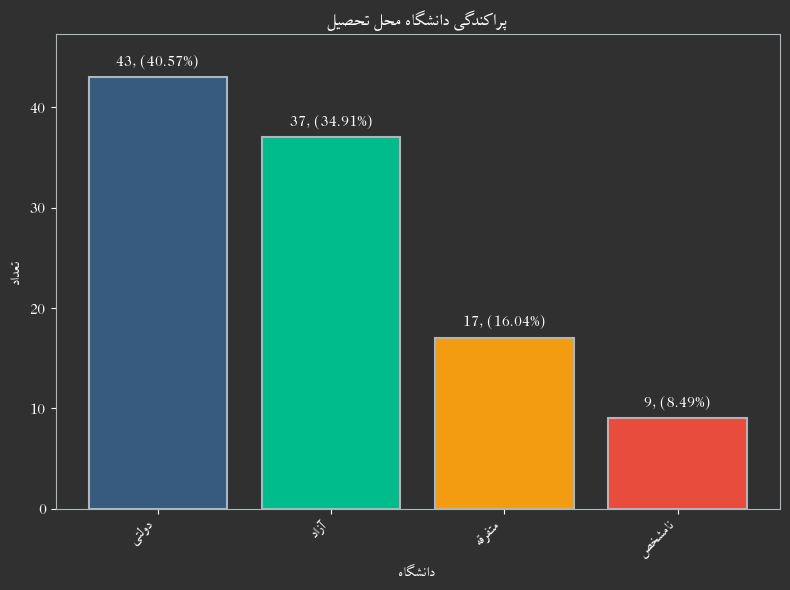
بخش ۱: وضعیت اشتغال
عموم مشارکتکنندگان بیش از ۴ سال سابقه کار دارند. مدت ماندگاریشان در شغل فعلی به نسبت زیاد (۱ تا ۷ سال) است. اکثریت مطلق آنان به صورت قراردادی استخدام شدهاند و بیشتر در زمینه برنامهنویسی فعالیت میکنند.
سابقه کار در حوزه فناوری اطلاعات
Code
temp_order = ['کمتر از ۱ سال', '۱ تا ۳ سال', '۴ تا ۷ سال', 'بیش از ۷ سال']temp_colors = { temp_order[0]: COLORS['primary'], temp_order[1]: COLORS['success'], temp_order[2]: COLORS['warning'], temp_order[3]: COLORS['danger']}plot_builder(df,QUESTIONS[6],ordered_list=temp_order, colors=temp_colors, title='پراکندگی سابقه کار در حوزه فناوری اطلاعات', xlabel='تعداد سال فعالیت', ylabel='تعداد')
مدت زمان فعالیت در شرکت کنونی
Code
temp_order = ['کمتر از ۱ سال', '۱ تا ۳ سال', '۴ تا ۷ سال', 'بیش از ۷ سال']temp_colors = { temp_order[0]: COLORS['primary'], temp_order[1]: COLORS['success'], temp_order[2]: COLORS['warning'], temp_order[3]: COLORS['danger']}plot_builder(df,QUESTIONS[7],ordered_list=temp_order, colors=temp_colors, title='پراکندگی سابقه فعالیت در شرکت کنونی', xlabel='تعداد سال فعالیت', ylabel='تعداد')
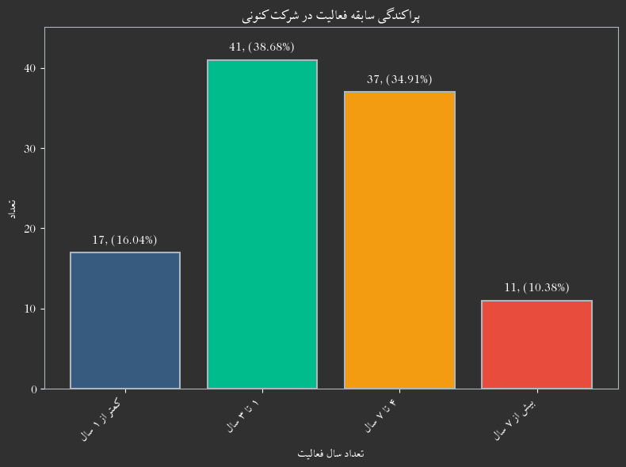
نوع قرارداد
Code
plot_builder(df,QUESTIONS[8], title='نوع قرارداد با شرکت کنونی', xlabel='نوع قرارداد', ylabel='تعداد')
اصلیترین نقش یا عنوان شغلی فعلی
Code
plot_builder(df,QUESTIONS[9], title='اصلیترین نقش یا شغل', xlabel='عنوان شغلی', ylabel='تعداد')
plot_responses_by_category(df, df[QUESTIONS[0]], df[QUESTIONS[9]],title="پراکندگی نقشها بر حسب جنس")
Code
plot_responses_by_category(df, df[QUESTIONS[1]], df[QUESTIONS[9]],category_sort=ordered_ages, title="پراکندگی نقشها بر حسب سن")
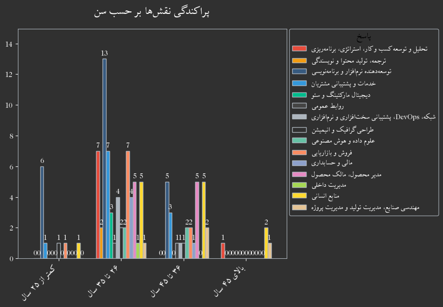
بخش ۲: رضایت شغلی و تجربه کاری
در این بخش میزان رضایت مشارکتکنندگان از شغل خود سنجیده شده است. این رضایت با هفت سنجه و با استفاده از طیف لیکرت آزموده شده است. به نظر میرسد در مجموع میزان رضایت مشارکتکنندگان از شرح شغل و همخوانی آن با مهارتها و علاقهمندیهای آنها از سطح متوسط بالاتر است. اکثر مشارکتکنندگان تأثیرگذاری خود در موفقیت کلی سازمان را زیاد و خیلی زیاد ارزیابی کردهاند. اما این توزیع در مورد ارزیابی مشارکتکنندگان از این که سازمان قدردان تلاشهای آنهاست تغییر میکند و به نسبت دیگر سنجهها وضعیت متفاوتی را نشان میدهد. در مجموع میتوان ادعا کرد که مشارکتکنندگان اگر چه از فعالیتهای شغلی خود راضی هستند و آن را موثر میدانند، اما از دیده شدن این تلاشها و قدردانی سازمان رضایت ندارند.
از شرح شغل خود راضی هستم
Code
temp_order = ['به هیچ وجه','کم','متوسط','زیاد','خیلی زیاد']temp_colors = { temp_order[0]: COLORS['danger'], temp_order[1]: COLORS['warning'], temp_order[2]: COLORS['primary'], temp_order[3]: COLORS['info'], temp_order[4]: COLORS['success']}plot_builder(df,section_2_questions[0],temp_order, temp_colors, title='از شرح شغل خود راضی هستم', xlabel='میزان موافقت', ylabel='تعداد')
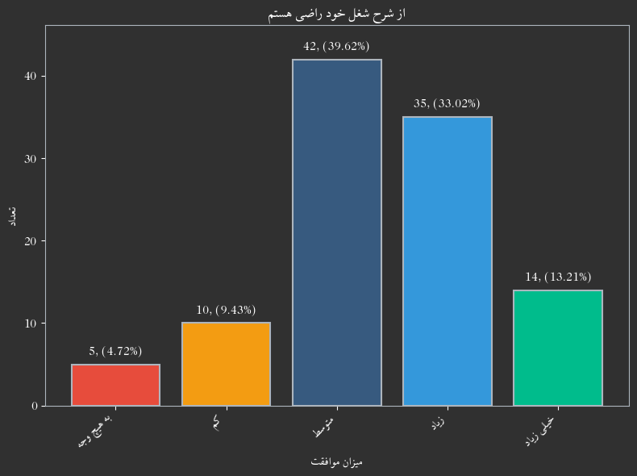
از وظایفی که به من داده میشود راضی هستم.
Code
plot_builder(df,section_2_questions[1],temp_order, temp_colors, title='از وظایفی که به من داده میشود راضی هستم', xlabel='میزان موافقت', ylabel='تعداد')
احساس میکنم شغل من با مهارتها و علاقهمندیهایم همخوانی دارد.
Code
plot_builder(df,section_2_questions[2],temp_order, temp_colors, title='احساس میکنم شغل من با مهارتها و علاقهمندیهایم همخوانی دارد', xlabel='میزان موافقت', ylabel='تعداد')
در کل، از شغل و موقعیت شغلی فعلی خود رضایت دارم.
Code
plot_builder(df,section_2_questions[3],temp_order, temp_colors, title='در کل، از شغل و موقعیت شغلی فعلی خود رضایت دارم.', xlabel='میزان موافقت', ylabel='تعداد')
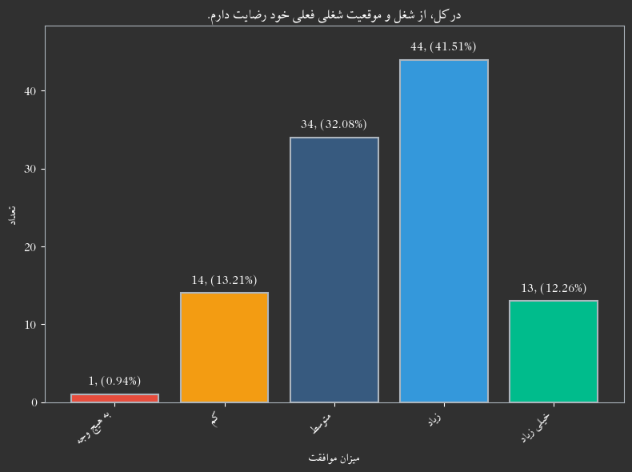
احساس میکنم که شغلم در موفقیت کلی سازمان تأثیرگذار است.
Code
plot_builder(df,section_2_questions[4],temp_order, temp_colors, title='احساس میکنم که شغلم در موفقیت کلی سازمان تأثیرگذار است.', xlabel='میزان موافقت', ylabel='تعداد')
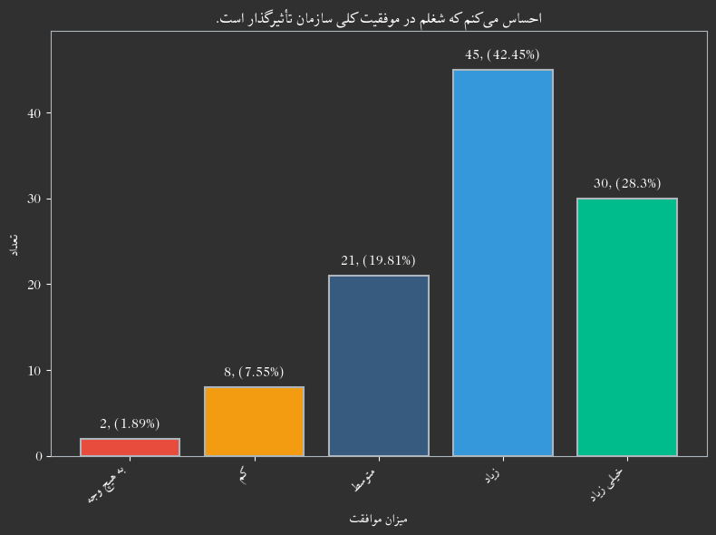
میتوان گفت سازمان قدردان تلاشهای من است.
Code
plot_builder(df,section_2_questions[5],temp_order, temp_colors, title='میتوان گفت سازمان قدردان تلاشهای من است.', xlabel='میزان موافقت', ylabel='تعداد')
بخش ۳: تعادل کار و زندگی
در این بخش با استفاده از شش سنجه از مشارکتکنندگان خواسته شده تا تعادل میان کار و زندگی شخصی خود را ارزیابی کنند. به نظر میرسد در هیچ کدام از این سنجهها اکثریت مطلق وجود ندارد. گزینه تاحدودی در همه سنجهها درصد بالایی را به خود اختصاص داده است. در مورد زمان کاری، مشارکتکنندگان به دو گروه موافق و مخالف تقسیم میشوند. اکثریت مشارکتکنندگان امکان استفاده از دورکاری ندارند. در مورد میزان اهمیت سلامت جسمی و روانی کارکنان از جانب شرکت، پاسخدهندگان نظر مشترکی ندارند. اکثریت آنان از سیاستها و برنامههای شرکت برای حفظ تعادل کار و زندگی ناراضی هستند.
زمان کاری من مناسب است و به من اجازه میدهد بین کار و زندگی تعادل برقرار کنم.
Code
temp_order = ['خیلی مخالفم','مخالفم','تا حدودی','موافقم',"خیلی موافقم"]temp_colors = { temp_order[0]: COLORS['danger'], temp_order[1]: COLORS['warning'], temp_order[2]: COLORS['primary'], temp_order[3]: COLORS['info'], temp_order[4]: COLORS['success']}plot_builder(df,section_3_questions[0],ordered_list=temp_order, colors=temp_colors, title='زمان کاری من مناسب است و به من اجازه میدهد بین کار و زندگی تعادل برقرار کنم.', xlabel='میزان موافقت', ylabel='تعداد')
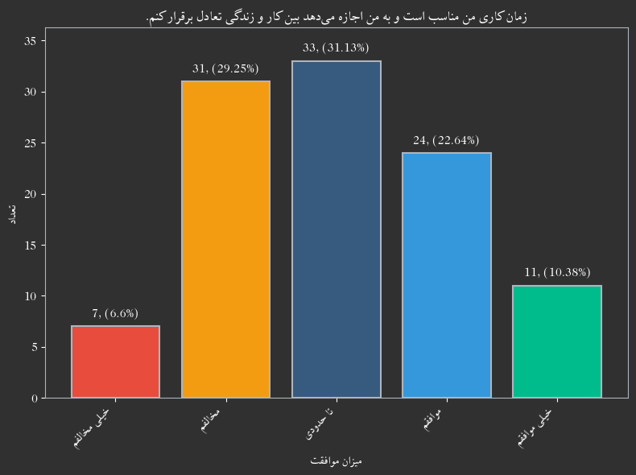
شرکت امکان دورکاری برای من فراهم میکند.
Code
plot_builder(df,section_3_questions[1],temp_order, temp_colors, title='شرکت امکان دورکاری برای من فراهم میکند.', xlabel='میزان موافقت', ylabel='تعداد')
شرایط کار در این شرکت امکان ایفای دیگر نقشها و مسئولیتهای کارکنان در زندگی (مانند والد بودن، همسر بودن، مراقبت از اعضای خانواده و …) را فراهم میکند.
Code
plot_builder(df,section_3_questions[4],temp_order, temp_colors, title='شرایط کار در این شرکت امکان ایفای دیگر نقشها و مسئولیتهای کارکنان در زندگی (مانند والد بودن، همسر بودن، مراقبت از اعضای خانواده و ...) را فراهم میکند.', xlabel='میزان موافقت', ylabel='تعداد')
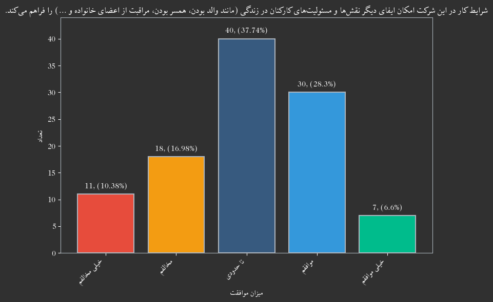
از سیاستها و برنامههای شرکت برای حفظ تعادل کار و زندگی رضایت دارم.
Code
plot_builder(df,section_3_questions[5],temp_order, temp_colors, title='از سیاستها و برنامههای شرکت برای حفظ تعادل کار و زندگی رضایت دارم.', xlabel='میزان موافقت', ylabel='تعداد')
امکان ایفای دیگر نقشها و مسئولیتها بر حسب جنس
Code
plot_responses_by_category(df, df[QUESTIONS[0]], df[QUESTIONS[22]],title="امکان ایفای دیگر نقشها و مسئولیتها بر حسب جنس", ordered_list=section3_answer_order)
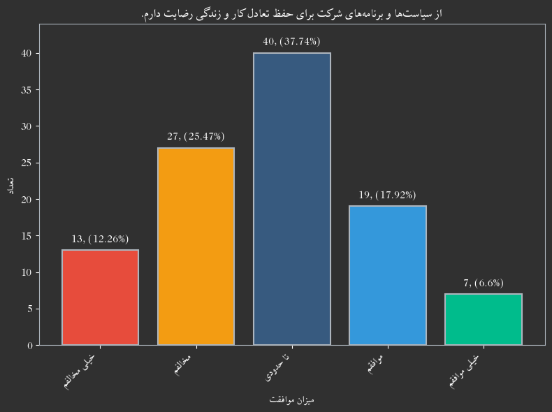
اهمیت سلامت جسمی کارکنان برای شرکت بر حسب اندازه شرکت
Code
plot_responses_by_category(df, df[QUESTIONS[10]], df[QUESTIONS[20]],title="اهمیت سلامت جسمی کارکنان برای شرکت بر حسب اندازه شرکت", ordered_list=section3_answer_order, category_sort=ordered_company_sizes)
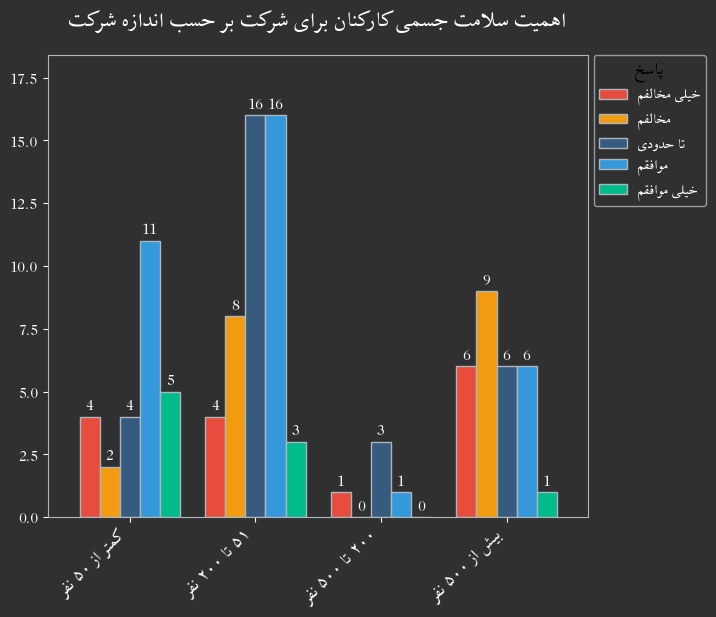
اهمیت سلامت روان کارکنان برای شرکت بر حسب اندازه شرکت
Code
plot_responses_by_category(df, df[QUESTIONS[10]], df[QUESTIONS[21]],title="اهمیت سلامت روان کارکنان برای شرکت بر حسب اندازه شرکت", ordered_list=section3_answer_order, category_sort=ordered_company_sizes)
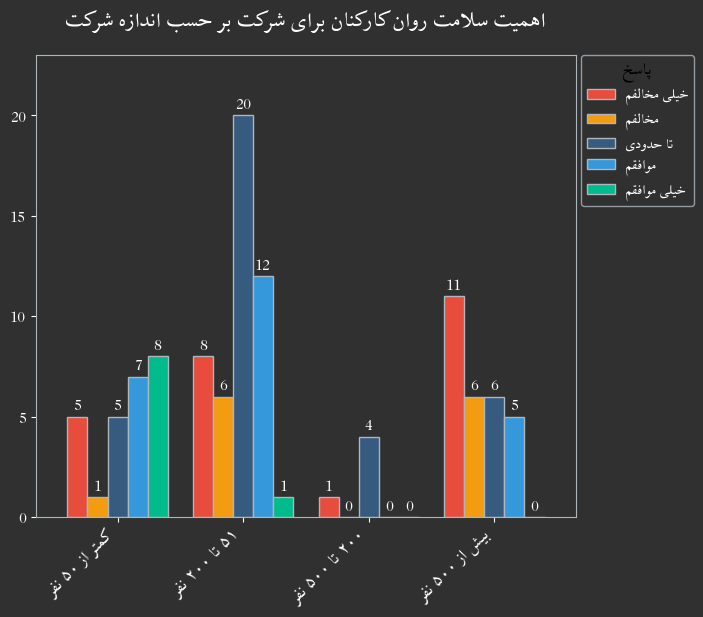
تعادل کار و زندگی با سایز شرکت
Code
plot_responses_by_category(df, df[QUESTIONS[10]], df[QUESTIONS[23]],title="رضایت کارکنان از سیاستها و برنامههای شرکت برای حفظ تعادل کار و زندگی بر حسب اندازه شرکت", ordered_list=section3_answer_order, category_sort=ordered_company_sizes)
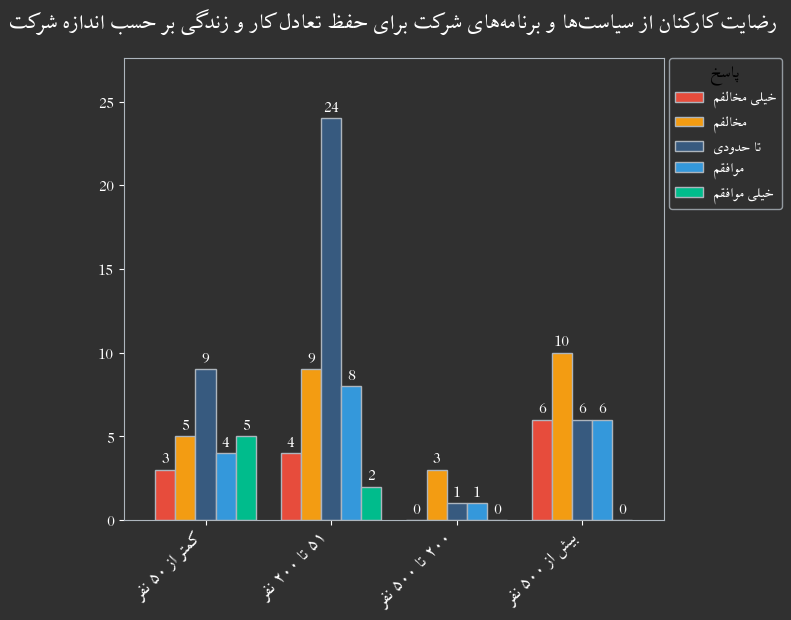
بخش ۴: حقوق و مزایا
برخلاف بخشهای پیشین که مشارکتکنندگان که توزیع نسبتا متعادلی میان مخالف و موافق داشتند، تعداد ناراضیان از حقوق و مزایا بسیار بیشتر است. عموم مشارکتکنندگان نه تنها از حقوق و مزایای خود رضایت ندارند، بلکه آن را در مقایسه با دیگر شرکتها رقابتی نمیدانند و توزیع آن را نیز عادلانه و منصفانه نمیبینند. به باور آنان، حقوق و مزایایی که میگیرند نسبت به اهمیت کاری که انجام میدهند منصفانه نیست.
از میزان حقوق و مزایای دریافتی خود رضایت دارم.
Code
plot_builder(df,section_4_questions[0],temp_order, temp_colors, title='از میزان حقوق و مزایای دریافتی خود رضایت دارم.', xlabel='میزان موافقت', ylabel='تعداد')
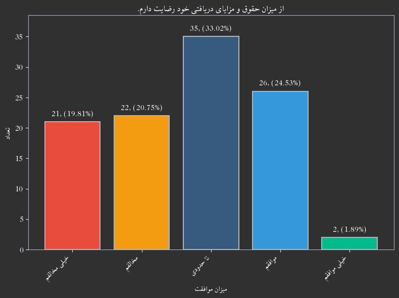
حقوق من در این شرکت در مقایسه با دیگر شرکتها رقابتی است.
Code
plot_builder(df,section_4_questions[1],temp_order, temp_colors, title='حقوق من در این شرکت در مقایسه با دیگر شرکتها رقابتی است.', xlabel='میزان موافقت', ylabel='تعداد')
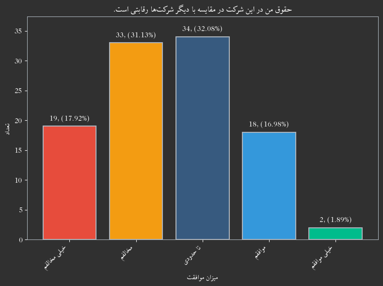
مزایای جانبی شرکت (بیمه، پاداش، مرخصی و …) از کیفیت کافی برخوردار است.
Code
plot_builder(df,section_4_questions[2],temp_order, temp_colors, title='مزایای جانبی شرکت (بیمه، پاداش، مرخصی و ...) از کیفیت کافی برخوردار است.', xlabel='میزان موافقت', ylabel='تعداد')
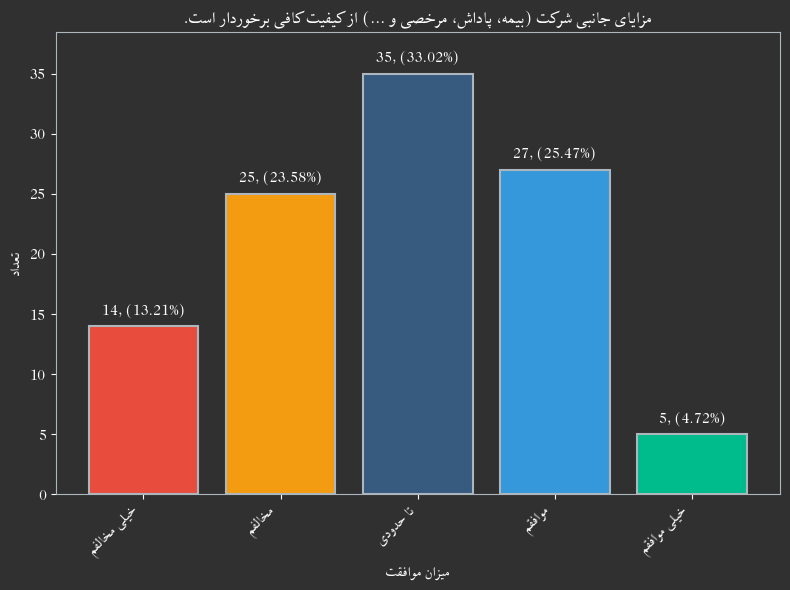
توزیع دستمزد در سازمان ما عادلانه است.
Code
plot_builder(df,section_4_questions[3],temp_order, temp_colors, title='توزیع دستمزد در سازمان ما عادلانه است.', xlabel='میزان موافقت', ylabel='تعداد')
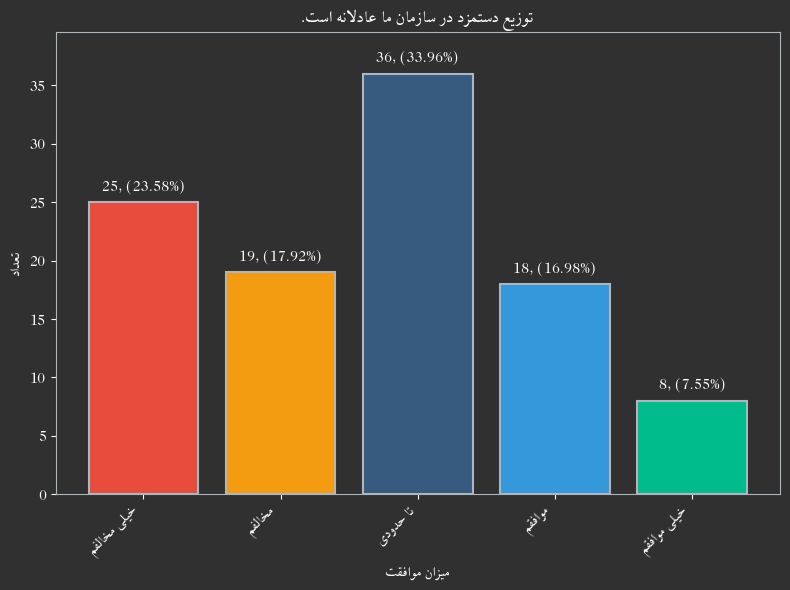
حقوق و مزایای من با توجه به میزان کارم منصفانه است.
Code
plot_builder(df,section_4_questions[4],temp_order, temp_colors, title='حقوق و مزایای من با توجه به میزان کارم منصفانه است.', xlabel='میزان موافقت', ylabel='تعداد')
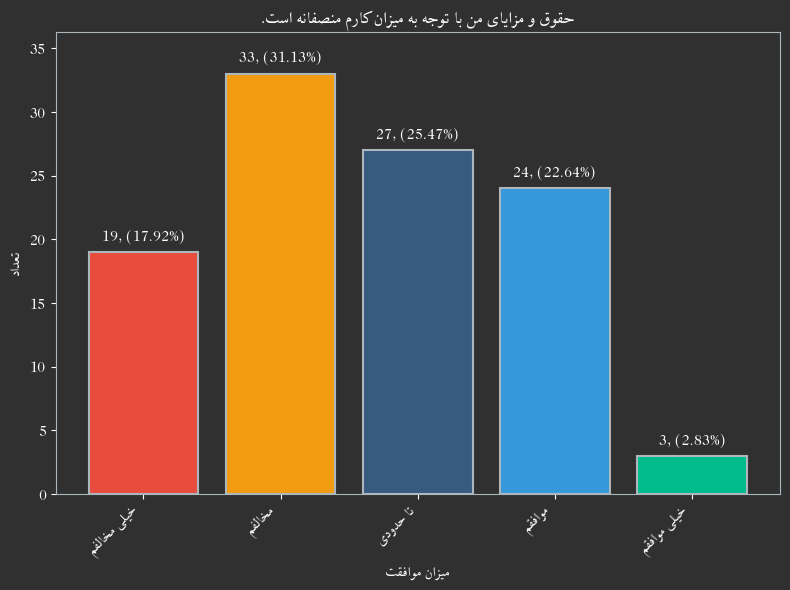
حقوق و مزایای من با توجه به اهمیت کارم منصفانه است.
Code
plot_builder(df,section_4_questions[5],temp_order, temp_colors, title='حقوق و مزایای من با توجه به اهمیت کارم منصفانه است.', xlabel='میزان موافقت', ylabel='تعداد')
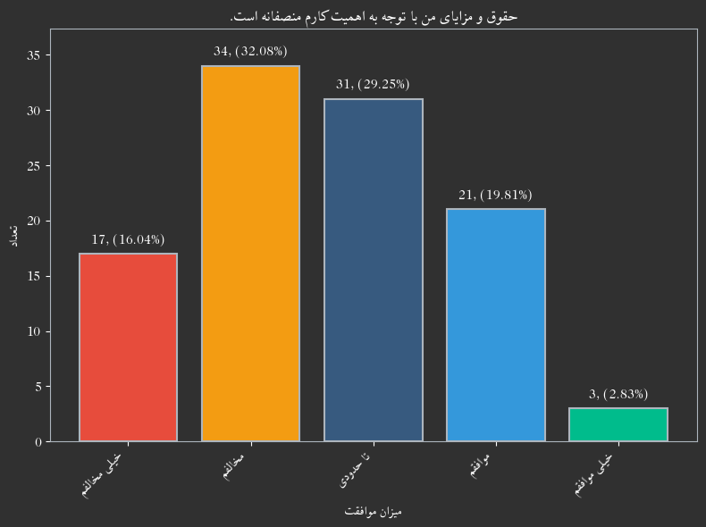
بخش ۵: فرصتهای رشد و آموزش
در این بخش با استفاده از چهار سنجه، نظر مشارکتکنندگان نسبت به فرصتهایی که شرکت برای ارتقای شغلی و یادگیری در اختیار آنان قرار میدهد سنجیده شده است. پاسخها نشان میدهد که بیشترین نارضایتی در این بخش، مربوط به مسیرهای ارتقای شغلی است که مشارکتکنندکان رأی به عدم شفافیت مسیرهای آن دادهاند. رأی مشارکتکنندگان درباره فرصتهای یادگیری در شرکت، نسبتا متعادل و مثبت است؛ به ویژه ارزیابیشان از امکان یادگیری از همکاران و مدیرانشان. همین طور فرصتهای کافی برای رشد حرفهای برایشان وجود دارد.
مسیرهای روشن و مشخصی برای ارتقاء شغلی در سازمان وجود دارد.
Code
plot_builder(df,section_5_questions[0],temp_order, temp_colors, title='مسیرهای روشن و مشخصی برای ارتقاء شغلی در سازمان وجود دارد.', xlabel='میزان موافقت', ylabel='تعداد')
من از برنامههای آموزشی و توسعه مهارتها در شرکت بهرهمند شدهام.
Code
plot_builder(df,section_5_questions[1],temp_order, temp_colors, title='من از برنامههای آموزشی و توسعه مهارتها در شرکت بهرهمند شدهام.', xlabel='میزان موافقت', ylabel='تعداد')
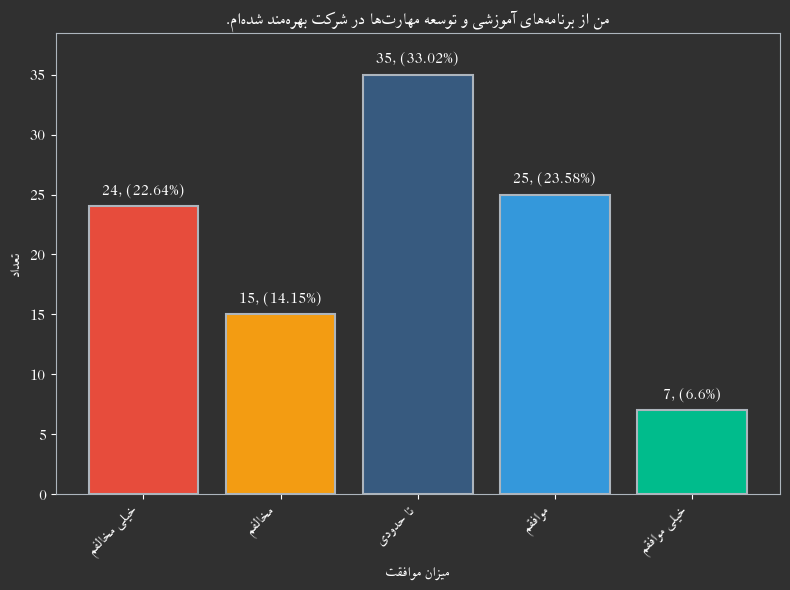
فرصتهای کافی برای یادگیری و رشد حرفهای در شرکت وجود دارد.
Code
plot_builder(df,section_5_questions[2],temp_order, temp_colors, title='فرصتهای کافی برای یادگیری و رشد حرفهای در شرکت وجود دارد.', xlabel='میزان موافقت', ylabel='تعداد')
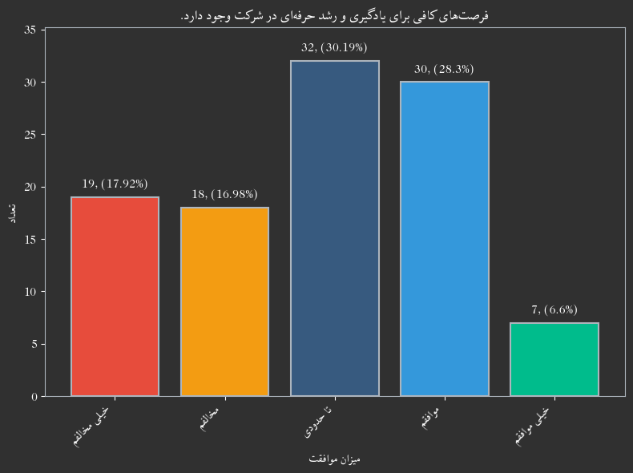
امکان یادگیری از همکاران و مدیران در شرکت وجود دارد.
Code
plot_builder(df,section_5_questions[3],temp_order, temp_colors, title='امکان یادگیری از همکاران و مدیران در شرکت وجود دارد.', xlabel='میزان موافقت', ylabel='تعداد')
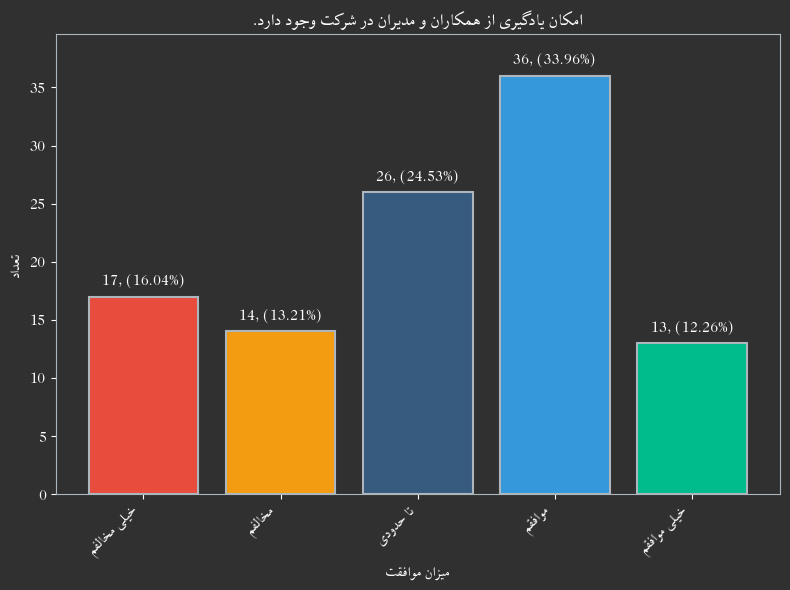
مسیرهای روشن و مشخص رشد و ارتقا بر حسب اندازه شرکت
Code
plot_responses_by_category(df, df[QUESTIONS[10]], df[QUESTIONS[32]],title="مسیرهای روشن و مشخص رشد و ارتقا بر حسب اندازه شرکت", ordered_list=section3_answer_order, category_sort=ordered_company_sizes)
بخش ۶: فرهنگ سازمانی و محیط کار
در این بخش با بهرهگیری از شش سنجه نظر مشارکتکنندگان در ارتباط با میزان احساس امنیت و همخوانی ارزشی و رفتاری با سازمان سنجیده شده است. در حالی که رضایت از فرهنگ سازمان و ارزشهای شرکت مشارکتکنندگان را به دو گروه موافق و مخالف تقسیم میکند، اکثریت مشارکتکنندگان اظهار کردهاند که شرکت آنها را همان طور که هستند میپذیرد و محیط کارشان صمیمی و مشارکتمحور است. هر چند که به نظر نمیرسد افراد احساس کنند سازمان برای کنترل رفتار ناسالم (بین فردی و سازمانی) ساز و کارهای موثری داشته باشد.
از فرهنگ سازمانی و ارزشهای شرکت رضایت دارم.
Code
temp_order = ['به هیچ وجه','کم','تا حدودی','زیاد','خیلی زیاد']temp_colors = { temp_order[0]: COLORS['danger'], temp_order[1]: COLORS['warning'], temp_order[2]: COLORS['primary'], temp_order[3]: COLORS['info'], temp_order[4]: COLORS['success']}plot_builder(df,section_6_questions[0],temp_order, temp_colors, title='از فرهنگ سازمانی و ارزشهای شرکت رضایت دارم.', xlabel='میزان موافقت', ylabel='تعداد')
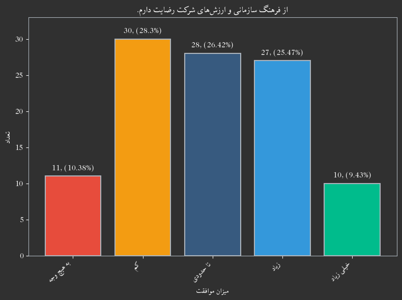
شرکت مرا همانطور که هستم می پذیرد.
Code
plot_builder(df,section_6_questions[1],temp_order, temp_colors, title='شرکت مرا همانطور که هستم می پذیرد.', xlabel='میزان موافقت', ylabel='تعداد')
محیط کار من صمیمی و مشارکتمحور است.
Code
plot_builder(df,section_6_questions[2],temp_order, temp_colors, title='محیط کار من صمیمی و مشارکتمحور است.', xlabel='میزان موافقت', ylabel='تعداد')
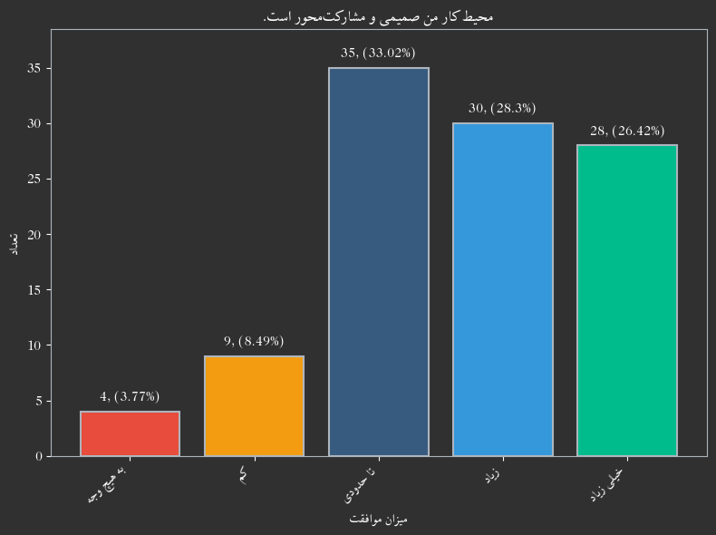
در این سازمان امنیت شغلی دارم.
Code
plot_builder(df,section_6_questions[3],temp_order, temp_colors, title='در این سازمان امنیت شغلی دارم.', xlabel='میزان موافقت', ylabel='تعداد')
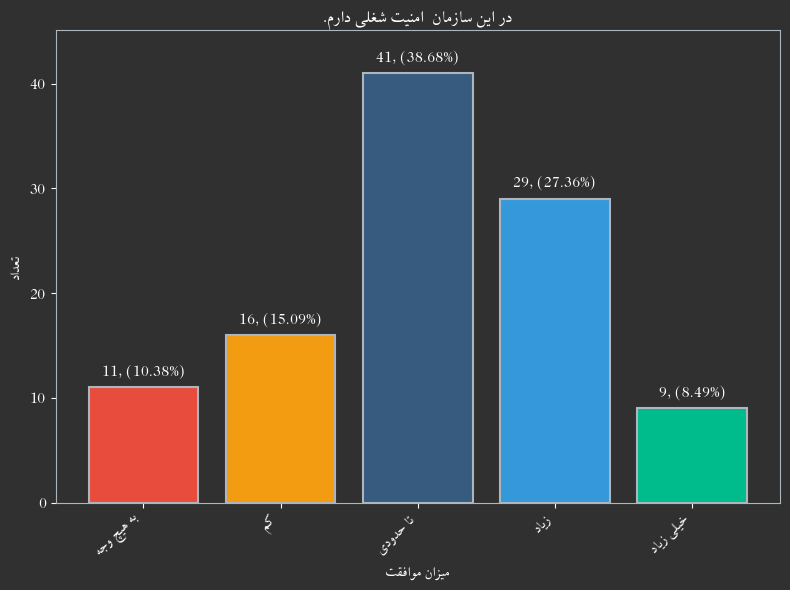
سازوکار کارآمدی برای کنترل رفتارهای ناسالم سازمانی (رقابت ناسالم، خبرچینی، تخریب وجهه همکاران و…) در سازمان ما وجود دارد.
Code
plot_builder(df,section_6_questions[4],temp_order, temp_colors, title='سازوکار کارآمدی برای کنترل رفتارهای ناسالم سازمانی (رقابت ناسالم، خبرچینی، تخریب وجهه همکاران و...) در سازمان ما وجود دارد.', xlabel='میزان موافقت', ylabel='تعداد')
سازوکار کارآمدی برای کنترل رفتارهای ناسالم بین فردی (انواع آزار محیط کار از قبیل آزار جنسی یا سوء استفاده از قدرت) در سازمان ما وجود دارد.
Code
plot_builder(df,section_6_questions[5],temp_order, temp_colors, title='سازوکار کارآمدی برای کنترل رفتارهای ناسالم بین فردی (انواع آزار محیط کار از قبیل آزار جنسی یا سوء استفاده از قدرت) در سازمان ما وجود دارد.', xlabel='میزان موافقت', ylabel='تعداد')
رضایت از فرهنگ و ارزشهای شرکت بر حسب جنس
Code
plot_responses_by_category(df, df[QUESTIONS[0]], df[QUESTIONS[37]],title="رضایت از فرهنگ و ارزشهای شرکت بر حسب جنس", ordered_list=section6_answer_order)
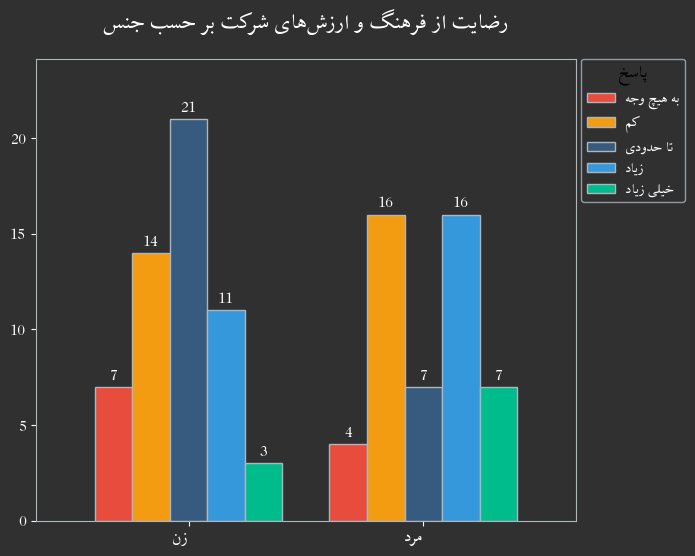
وجود ساز و کار کارآمد برای کنترل رفتارهای ناسالم سازمانی بر حسب جنس
Code
plot_responses_by_category(df, df[QUESTIONS[0]], df[QUESTIONS[41]],title="وجود ساز و کار کارآمد برای کنترل رفتارهای ناسالم سازمانی بر حسب جنس", ordered_list=section6_answer_order)
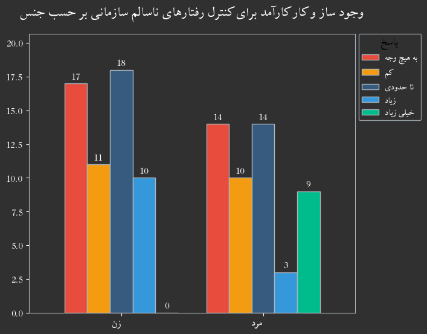
وجود ساز و کار کارآمد برای کنترل رفتارهای ناسالم سازمانی بر حسب اندازه شرکت
Code
plot_responses_by_category(df, df[QUESTIONS[10]], df[QUESTIONS[41]],title="وجود ساز و کار کارآمد برای کنترل رفتارهای ناسالم سازمانی بر حسب اندازه شرکت", ordered_list=section6_answer_order, category_sort=ordered_company_sizes)
وجود ساز و کار کارآمد برای کنترل رفتارهای ناسالم بین فردی بر حسب جنس
Code
plot_responses_by_category(df, df[QUESTIONS[0]], df[QUESTIONS[42]],title="وجود ساز و کار کارآمد برای کنترل رفتارهای ناسالم بین فردی بر حسب جنس", ordered_list=section6_answer_order)
وجود ساز و کار کارآمد برای کنترل رفتارهای ناسالم بین فردی بر حسب اندازه شرکت
Code
plot_responses_by_category(df, df[QUESTIONS[10]], df[QUESTIONS[42]],title="وجود ساز و کار کارآمد برای کنترل رفتارهای ناسالم بین فردی بر حسب اندازه شرکت", ordered_list=section6_answer_order, category_sort=ordered_company_sizes)
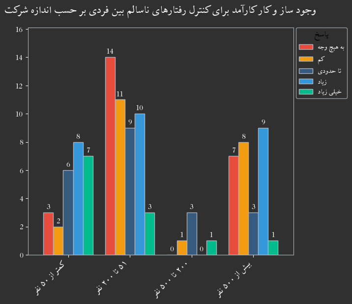
بخش ۷: مدیریت و رهبری
در این بخش با استفاده از ۴ سنجه نظر مشارکتکنندگان درباره عملکرد مدیرانشان پرسیده شده است. در مجموع به نظر میرسد مشارکتکنندگان از عملکرد مدیران خود راضی هستند هرچند بیشتر آنان گزینه محافظهکارانه تاحدودی را ترجیح دادهاند. در مورد شفاف و منطقی بودن تصمیمگیریهای مدیران، مخالفتها بیشتر از دیگر سنجههاست.
از حمایت و راهنماییهای مدیر مستقیم خود رضایت دارم.
Code
plot_builder(df,section_7_questions[0],temp_order, temp_colors, title='از حمایت و راهنماییهای مدیر مستقیم خود رضایت دارم.', xlabel='میزان موافقت', ylabel='تعداد')
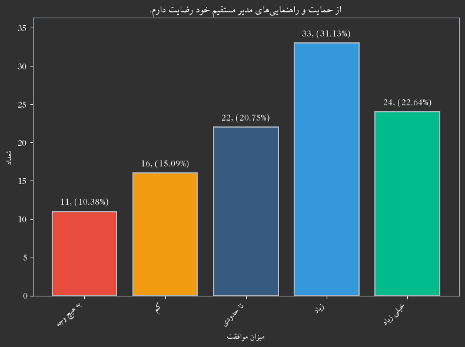
مدیران بازخوردهای من را میشنوند و به آنها عمل میکنند.
Code
plot_builder(df,section_7_questions[1],temp_order, temp_colors, title='مدیران بازخوردهای من را میشنوند و به آنها عمل میکنند.', xlabel='میزان موافقت', ylabel='تعداد')
تصمیمگیریهای مدیران برای من شفاف و منطقی است.
Code
plot_builder(df,section_7_questions[2],temp_order, temp_colors, title='تصمیمگیریهای مدیران برای من شفاف و منطقی است.', xlabel='میزان موافقت', ylabel='تعداد')
اعتبار و تشویق کاری که انجام میدهم به خودم (نه به مدیر مافوقم) میرسد.
Code
plot_builder(df,section_7_questions[3],temp_order, temp_colors, title='اعتبار و تشویق کاری که انجام میدهم به خودم (نه به مدیر مافوقم) میرسد.', xlabel='میزان موافقت', ylabel='تعداد')
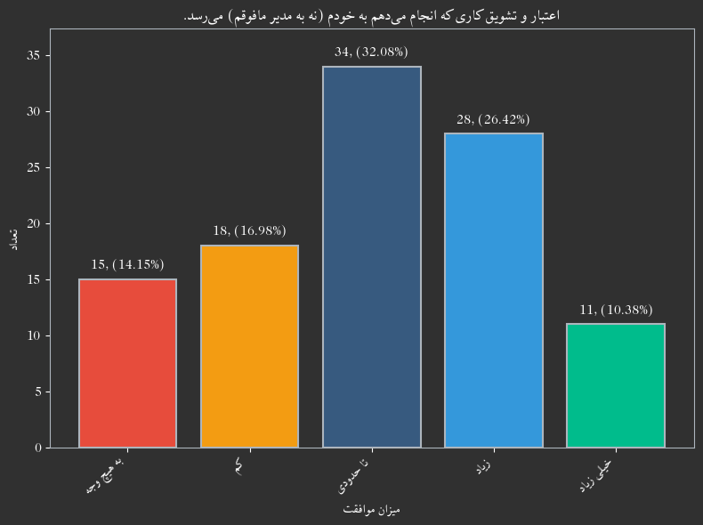
بخش ۸: دیدگاههای کلان نسبت به سازمان
در این بخش دیدگاههای کلان مشارکتکنندگان به ویژه در حوزه فناوری اطلاعات، با بهرهگیری از پنج سنجه، سنجیده شده است. مشارکتکنندگان اگر شرکتهای خود را در حوزه فناوری اطلاعات پیشرو میدانند، اما پیادهسازی فناوریهای جدید را متوسط ارزیابی میکنند. رویکرد آنها در ارتباط با روشن بودن استراتژیها، انعطافپذیری شرکت و اختصاص منابع و بودجه برای رسیدن به اهداف استراتژیک بدبینانهتر است. در این بخش هم مانند بخشهای قبلی، استراتژیها و اهداف کلی شرکت برای مشارکتکنندگان روشن نیست.
شرکت ما در حوزه IT پیشرو است.
Code
plot_builder(df,section_8_questions[0],temp_order, temp_colors, title='شرکت ما در حوزه IT پیشرو است.', xlabel='میزان موافقت', ylabel='تعداد')
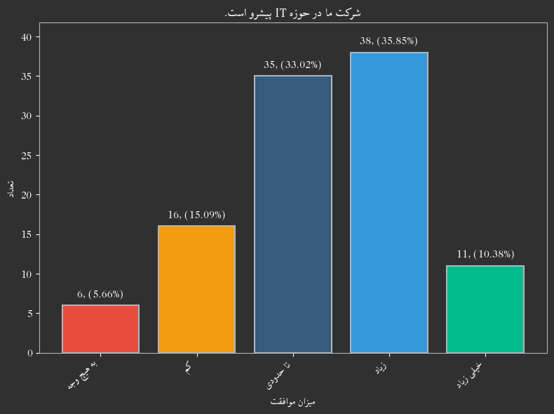
شرکت نوآوریها و فناوریهای جدید را به خوبی پیادهسازی میکند.
Code
plot_builder(df,section_8_questions[1],temp_order, temp_colors, title='شرکت نوآوریها و فناوریهای جدید را به خوبی پیادهسازی میکند.', xlabel='میزان موافقت', ylabel='تعداد')
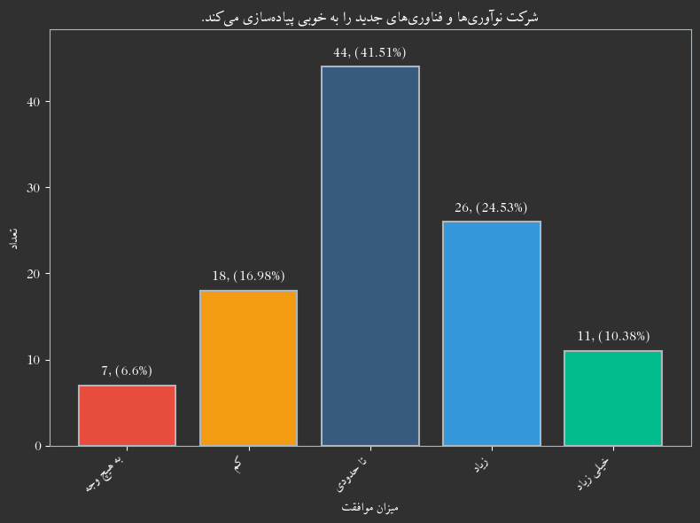
استراتژیها و اهداف کلی شرکت برای من روشن هستند.
Code
plot_builder(df,section_8_questions[2],temp_order, temp_colors, title='استراتژیها و اهداف کلی شرکت برای من روشن هستند.', xlabel='میزان موافقت', ylabel='تعداد')
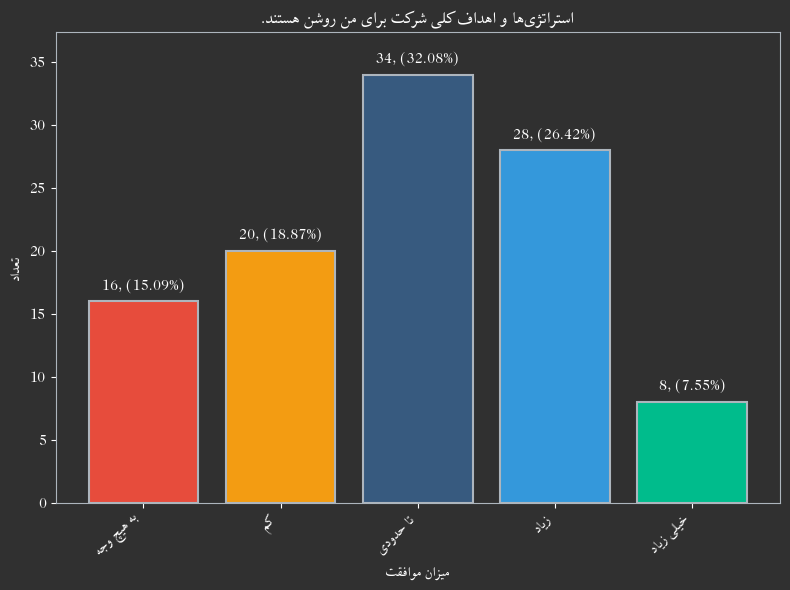
شرکت در مواجهه با تغییرات فناوری و نیازهای بازار انعطافپذیری مطلوبی دارد.
Code
plot_builder(df,section_8_questions[3],temp_order, temp_colors, title='شرکت در مواجهه با تغییرات فناوری و نیازهای بازار انعطافپذیری مطلوبی دارد.', xlabel='میزان موافقت', ylabel='تعداد')
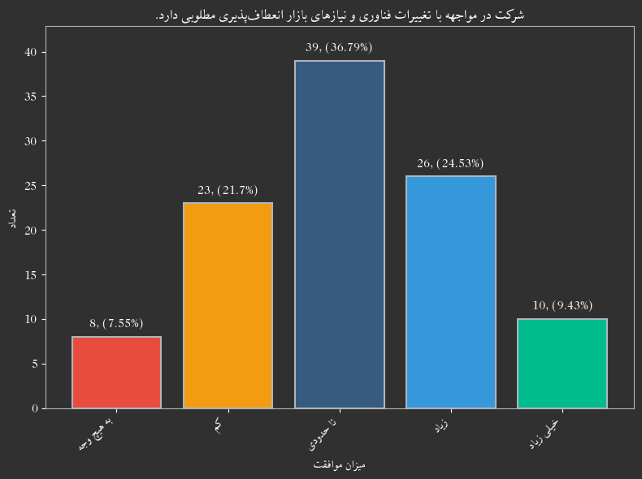
منابع و بودجه شرکت به درستی برای دستیابی به اهداف استراتژیک تخصیص داده میشوند.
Code
plot_builder(df,section_8_questions[4],temp_order, temp_colors, title='منابع و بودجه شرکت به درستی برای دستیابی به اهداف استراتژیک تخصیص داده میشوند.', xlabel='میزان موافقت', ylabel='تعداد')
بخش ۹: تصمیم به ماندن یا ترک شرکت
در این بخش اصلیترین موضوع مورد توجه این پژوهش سنجیده شده است، یعنی قصد جابجایی، قصد مهاجرت و عوامل بازدارنده. همان طور که دیده میشود، فرصتهای شغلی جایگزین برای اکثریت مطلق مشارکتکنندگان وجود دارد. به نظر میرسد جابجایی به شرکتهای بزرگتر اصلیترین هدف مهاجرتهای شغلی باشد. علاوه بر این، برخلاف انتظار پژوهشگران، مشارکتکنندگان تمایل دارند تا در موقعیت شغلی خود باقی بمانند و عامل حقوق و مزایا هم در ماندن و هم در رفتن از سازمان نقش اصلی را دارد. اگرچه اکثریت مشارکتکنندگان در این پژوهش در دو سال آینده قصد مهاجرت ندارند، اولین عامل ترغیب آنان که میخواهند مهاجرت کنند، بیثباتی اقتصادی ایران و آخرین عامل مسأله آزادی اجتماعی در ایران است.
در سال گذشته پیشنهاد شغلی دیگری داشتهاید؟
Code
temp_order = ['خیر', 'بله']temp_colors = {'بله': COLORS['success'],'خیر': COLORS['danger']}plot_builder(df,section_9_questions[0],temp_order, temp_colors, title='در سال گذشته پیشنهاد شغلی دیگری داشتهاید؟', xlabel='پاسخ', ylabel='تعداد')
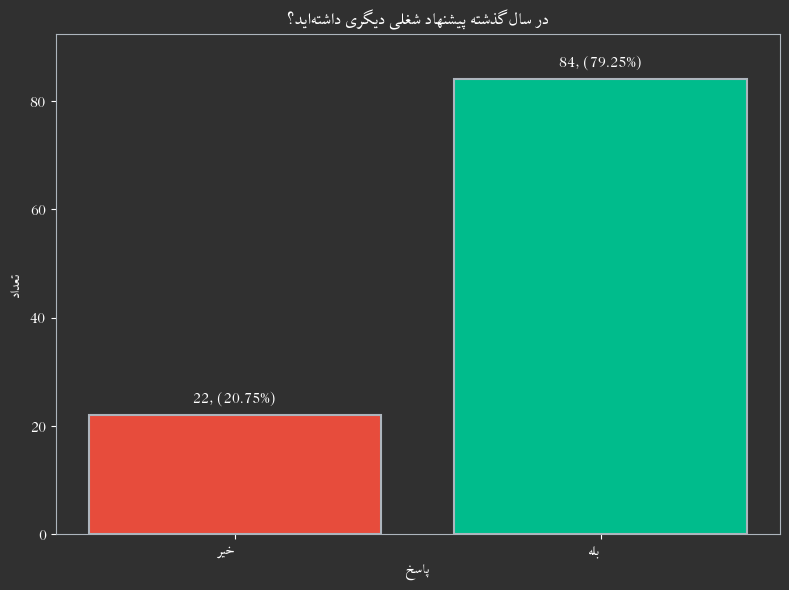
اگر از این شرکت بروید قصد دارید:
Code
plot_builder(df,section_9_questions[1], title='اگر از این شرکت بروید قصد دارید:', xlabel='پاسخ', ylabel='تعداد')
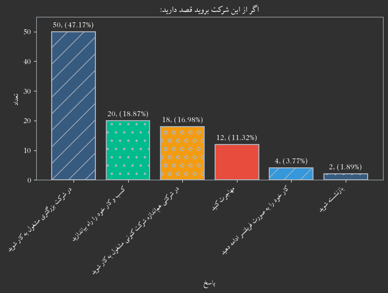
آیا قصد دارید تا دو سال آینده همچنان در این شرکت بمانید؟
Code
temp_order = ['به هیچ وجه','احتمالاً نه','مطمئن نیستم','احتمالاً بله','قطعاً بله']temp_colors = { temp_order[0]: COLORS['danger'], temp_order[1]: COLORS['warning'], temp_order[2]: COLORS['primary'], temp_order[3]: COLORS['info'], temp_order[4]: COLORS['success']}plot_builder(df,section_9_questions[2],temp_order, temp_colors, title='آیا قصد دارید تا دو سال آینده همچنان در این شرکت بمانید؟', xlabel='پاسخ', ylabel='تعداد')
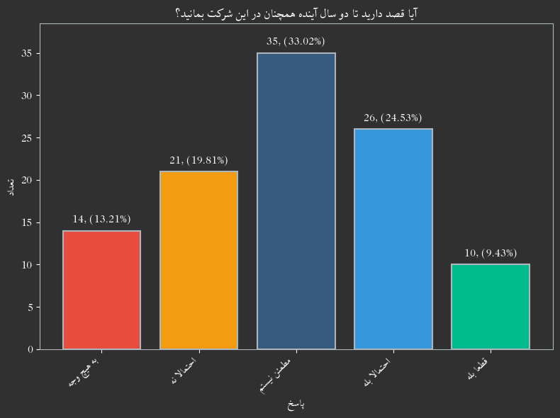
اگر قصد ماندن دارید کدامیک از عوامل زیر شما را به ماندن ترغیب میکند؟ (با شماره گذاری اولویت بندی کنید)
Code
plot_stacked_bar_chart_from_counts(column_elemnt_counter(df,section_9_questions[3]), title ="اولویت عوامل در ترغیب به ماندن در شرکت", xlabel ="اولویت", ylabel ="تعداد", )
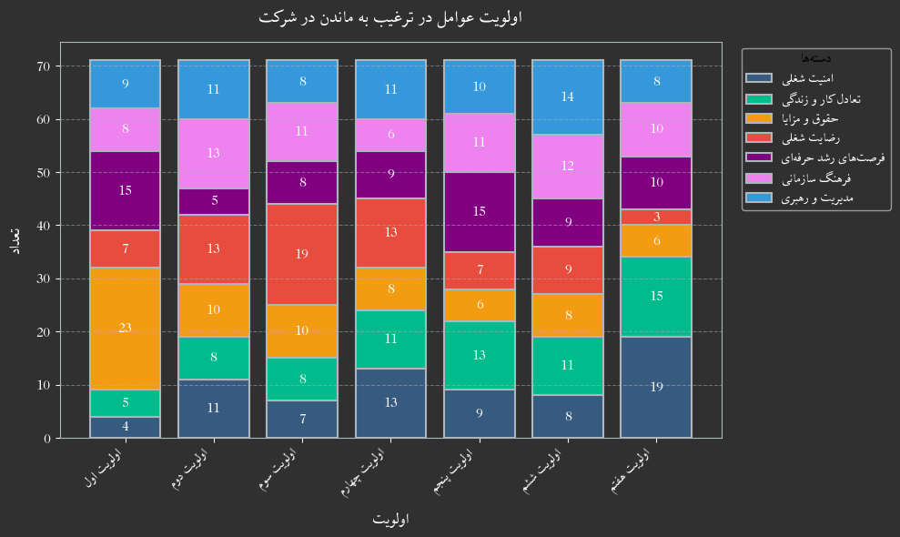
اگر قصد رفتن از سازمان را دارید کدامیک از عوامل زیر بیشترین تأثیر را بر تصمیم شما دارد؟
Code
plot_stacked_bar_chart_from_counts(column_elemnt_counter(df,section_9_questions[4]), title ="اولویت عوامل در ترغیب به رفتن از شرکت", xlabel ="اولویت", ylabel ="تعداد" )
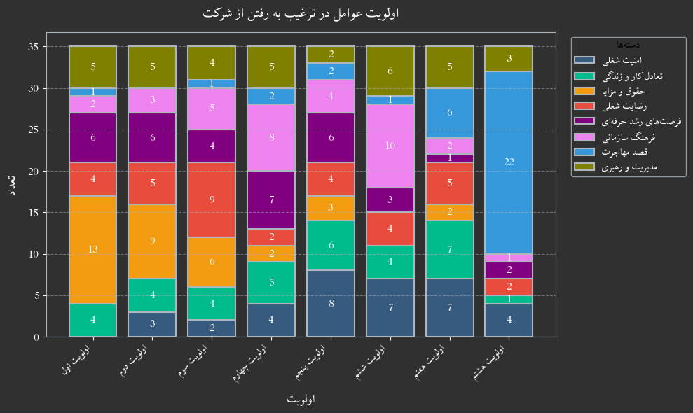
آیا طی دو سال آینده قصد مهاجرت دارید؟
Code
temp_order = ['خیر', 'بله']temp_colors = {'بله': COLORS['success'],'خیر': COLORS['danger']}plot_builder(df,section_9_questions[5],temp_order, temp_colors, title='آیا طی دو سال آینده قصد مهاجرت دارید؟', xlabel='پاسخ', ylabel='تعداد')
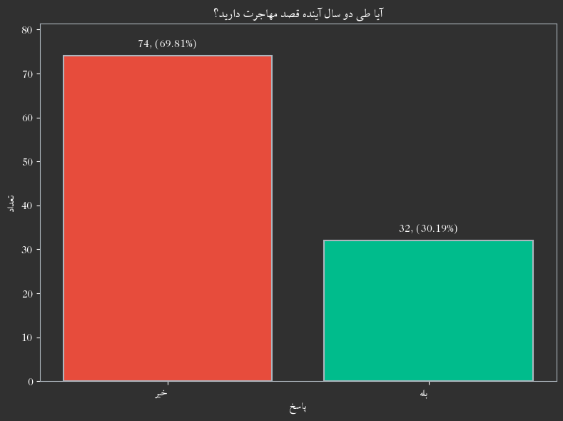
Code
plot_responses_by_category(df, section_9_questions[5], df[QUESTIONS[5]],title="قصد مهاجرت بر حسب دانشگاه محل تحصیل", xlabel="دانشگاه", ylabel="تعداد")
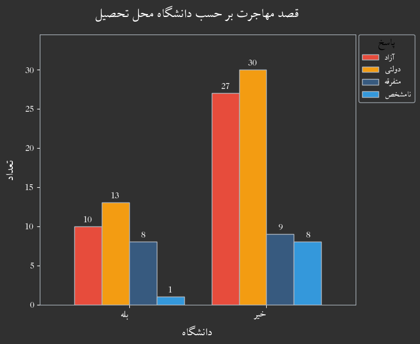
اگر قصد مهاجرت دارید کدام یک از عوامل زیر بیشترین تأثیر را در تصمیم شما دارد؟
Code
plot_stacked_bar_chart_from_counts(column_elemnt_counter(df,section_9_questions[6]), title ="اولویت عوامل در ترغیب به مهاجرت", xlabel ="اولویت", ylabel ="تعداد" )